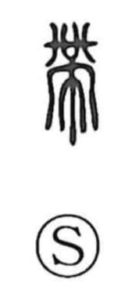

帯

Uncategorized
Kun: obi, obiru | On: tai
sash ・ belt ・ to wear ・ to put on
Explanation
Shirakawa views 帯 as a pictograph: the cloth component 巾 depicts a ritual apron or cloth affixed to the belt itself. Classical sources explain that it denotes the personal sash—leather for men, a silk waist-cord for women—with a pendant jewel (佩) hanging from it; such pendants were worn together with the ritual apron. From this image the character comes to mean the sash or belt and, by extension, the act of wearing or putting something on. The term 帯鉤 refers to the metal hook used to fasten such belts, many examples of which survive as fine works of craftsmanship.